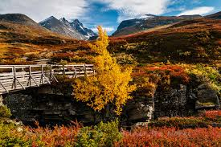
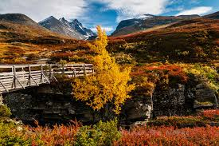
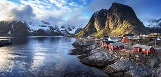
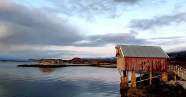
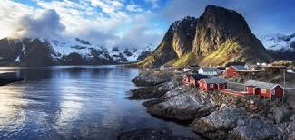
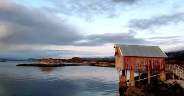
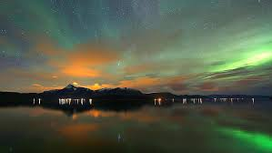
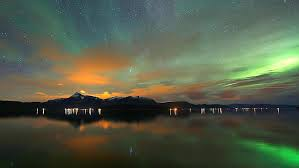

Ta med familien på eventyr til Nordland, i høstferien.
-Høstferien er en egen ferietradisjon vi har både i Norge og Sverige.
Opprinnelig grunn for disse fridagene på høsten er at barna skulle være med å plukke og høste poteter på grunn av matmangel etter 2. verdenskrig.
Derfor er høstferien også kjent som "potetferie."
 


.jpeg) 



 

Høsten er på vei
Vi gleder oss stort til å finne frem den gode ullgenseren, tenne stearinlys og krype opp under pleddet i sofaen med en varm kopp kakao, og bare nyte.
Minst like mye gleder vi oss til trærne skifter farger, til å plukke bær i marka, oppdage ny mat på restaurantene,
kjøre roadtrips i helgene og til å jakte på nordlys på kveldene.
Ja, høsten er tid for kos. Men det er utrolig deilig å være ute også.
Ting du bør gjøre på høsten Senk skuldrene og nyt høstfargene, det må være det viktigste å huske på når solen senker seg over en vakker høsthimmel.
Der er veldig mye ting du kan gjøre i høstferien i nordland, men du trenger å gjøre dette om du virkelig har lyst på å oppleve nordland.